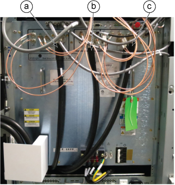
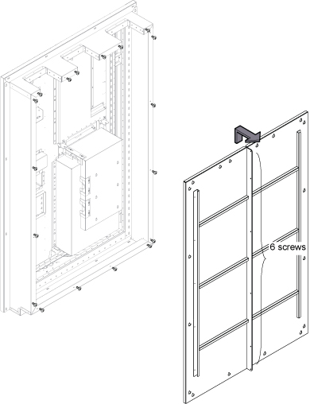
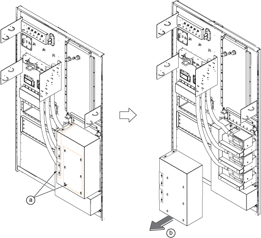
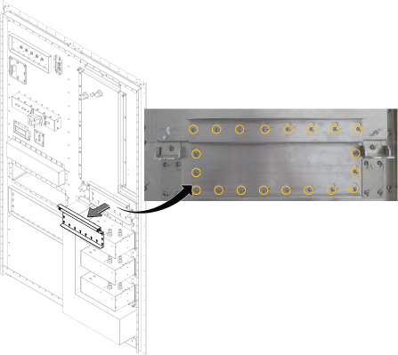
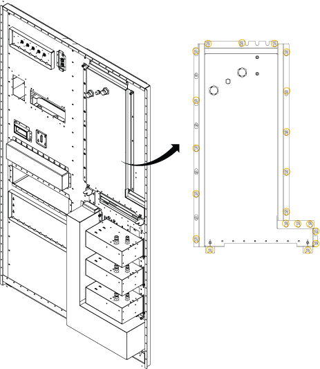
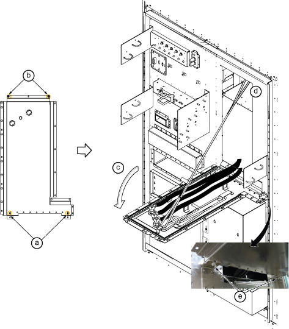
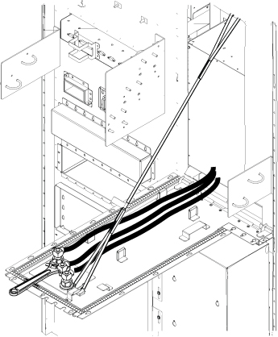

Remove the head and body Tx cables.
Prerequisites
| Personnel requirements |
|---|
| Required persons | Preliminary requirements | Procedure | Finalization |
|---|
| 1 | - | 20 minutes | - |
| Tools and test equipment |
|---|
| Item | Quantity | Part number | Manufacturer |
|---|
| Nonmagnetic Titanium Service Tool Kit, Small Set | 1 Kit | 5113258 | - |
| Nonmagnetic Titanium Service Tool Kit, Large Set | 5112581 | - |
Procedure
- Open the ISC cover.
- Remove the defective cables from the RF amp.
- CH2 body Tx cable (J22)
- Head Tx cable (J3)
- CH1 body Tx cable (J4)
Figure 1. RF amp
Note If the furnished closet door prevents cable removal, you can separate the PW cover into two pieces by removing six screws at the center.
Loosen the screws and remove the ISC Penetration Wall (PW) cover by lifting up a little.
Figure 2. Removing the ISC PW cover
- Remove the gradient cable cover per the following steps.
- Loosen 12 screws.
- Lift up a little and remove the gradient cable cover.
Figure 3. Removing the gradient cable cover
- At the pen wall side, loosen the screws for the GP4 access panel.
Figure 4. GP4 access panel screws
- Loosen 20 screws from the Tx cable access panel.
Figure 5. Tx cable access panel screws
- Tilt the Tx cable access panel.
- Loosen two screws.
- Remove two wing nuts.
- Tilt the panel to 90°.
- Hook the installed rope to the pin behind the opening of the access panel.
- Fix the panel at the bottom with two wing nuts.
Figure 6. Tilting the Tx cable access panel
- Disconnect the defective cable connectors with a wrench.
Figure 7. Removing the Tx cables